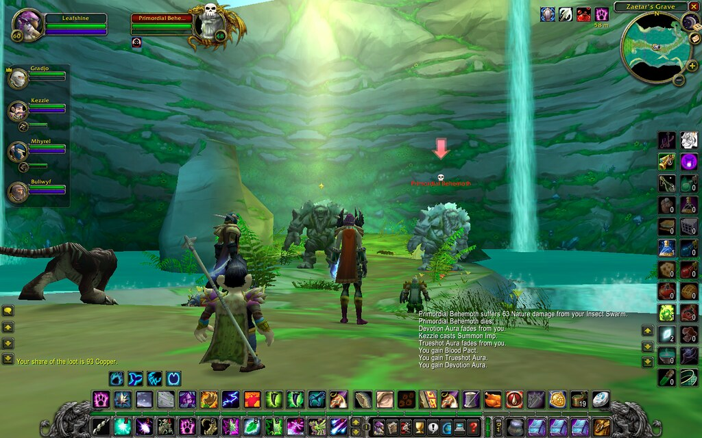

Usabilidad en videojuegos
La usabilidad es el primer paso para ofrecer una excelente experiencia de usuario porque intenta comprender cuándo realizar tareas simples en un juego puede crear importantes obstáculos que pueden, en casos extremos, llevar a los jugadores a dejar de jugar el juego.
Para asegurar que un juego tenga una buena usabilidad se trata de eliminar las frustraciones innecesarias e indeseadas en aquello que el jugador percibe.

Usabilidad vs Innovación
Si el juego es lo suficientemente innovador, tal vez pueda funcionar con problemas de usabilidad significativos, ya que los jugadores están dispuestos a hacer un esfuerzo extra si experimentan algo único (como ocurrió con Minecraft).
Usabilidad vs Coste
En juegos gratuitos, la facilidad de uso es crítica porque el compromiso inicial es bajo. Pequeñas frustraciones en los primeros minutos pueden arruinar la retención y el impacto comercial en la tienda virtual.
Usabilidad vs Jugabilidad (El HUD)
Los profesionales dicen que una interfaz usable debe sentirse "transparente". Sin embargo, eliminar el HUD por completo buscando inmersión puede ser contraproducente si obliga a abrir menús constantes. Ejemplos elegantes como *Ghost of Tsushima* o *Dead Space* resuelven esto de forma orgánica.
Heuristicas en Videojuegos
Reglas específicas (Federoff, Desurvire, Laitinen) que incluyen controles personalizables, retroalimentación inmediata, metas claras, evitar bloques de texto excesivos y asegurar la coherencia. Se agrupan en Informaciones, Invitaciones y Respuestas.
Principios de Percepción de Gestalt
Ayudan a organizar la interfaz de forma lógica (ej. ley de proximidad). También abordan el contraste visual para evitar confusiones de elementos y controlar la sobrecarga visual de alertas.
La Forma Sigue a la Función
La forma de cualquier icono u objeto debe transmitir intuitivamente su significado y utilidad para minimizar la carga cognitiva, evitando engañar las expectativas del jugador con falsas posibilidades.